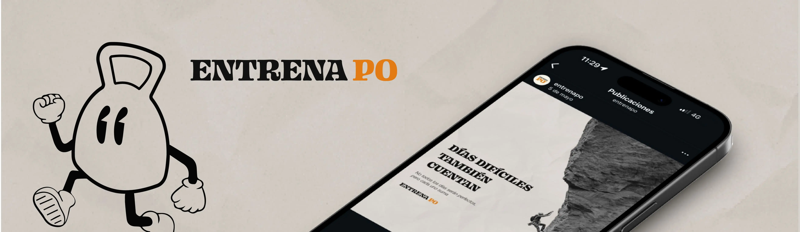
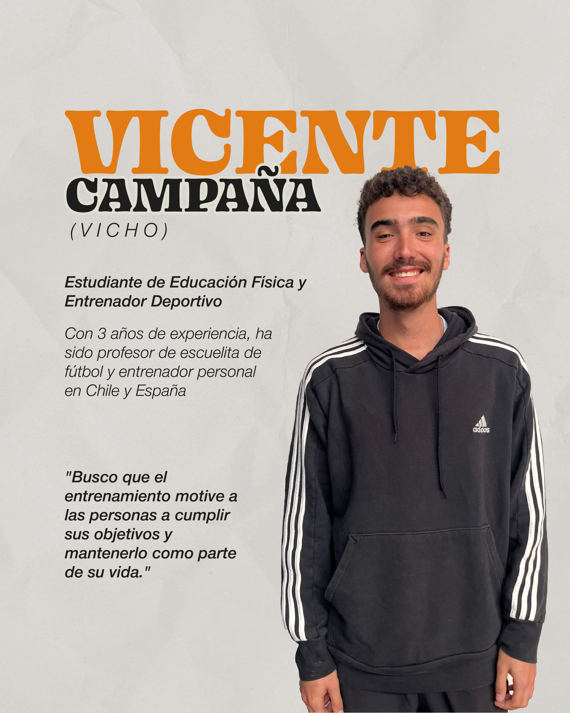
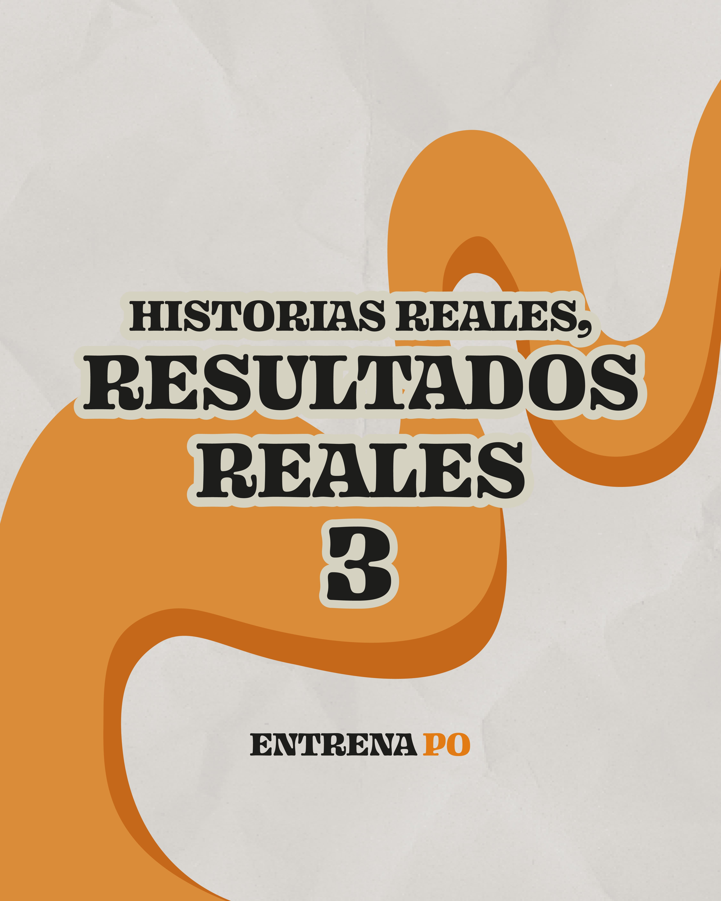
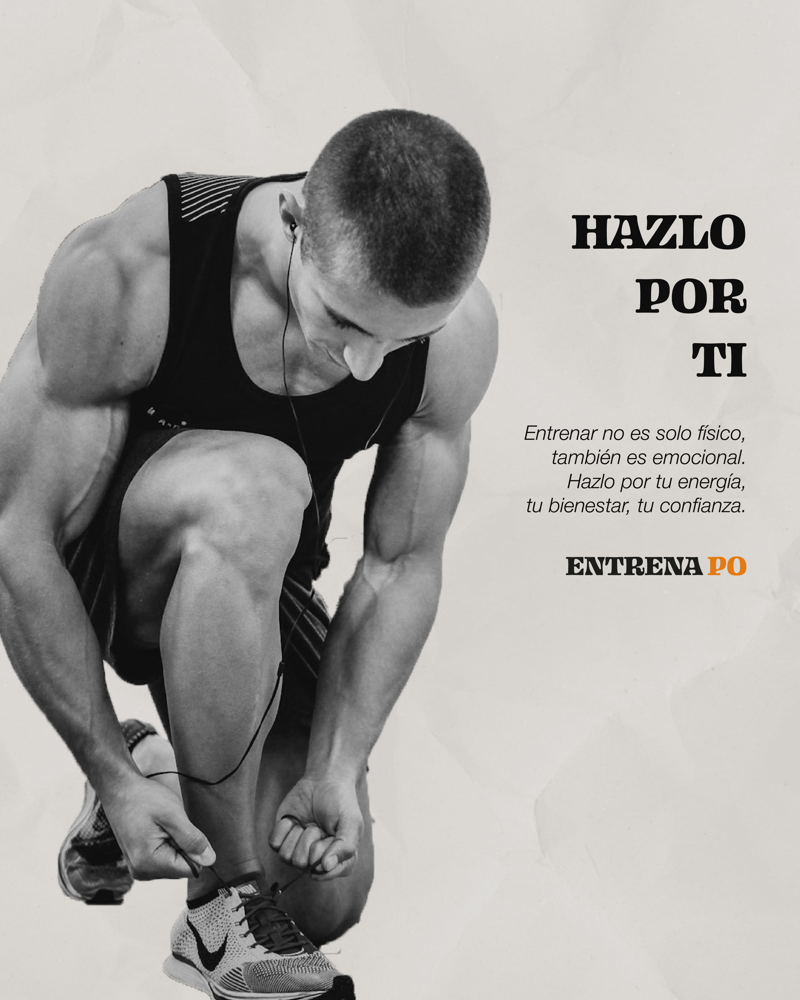
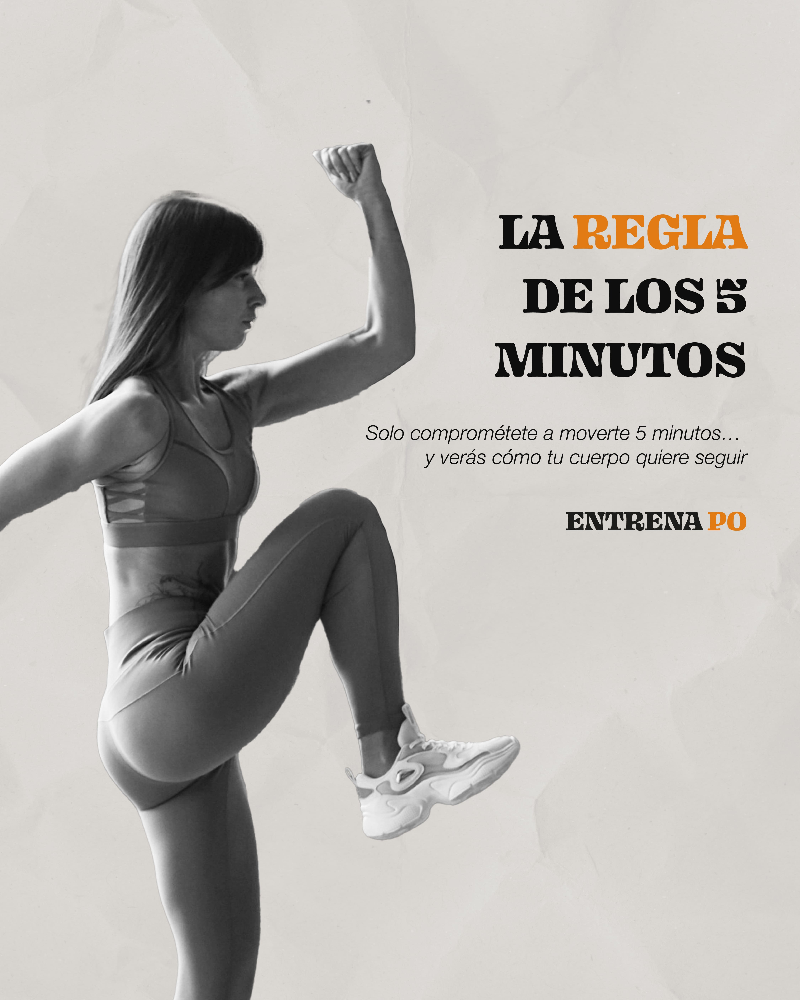
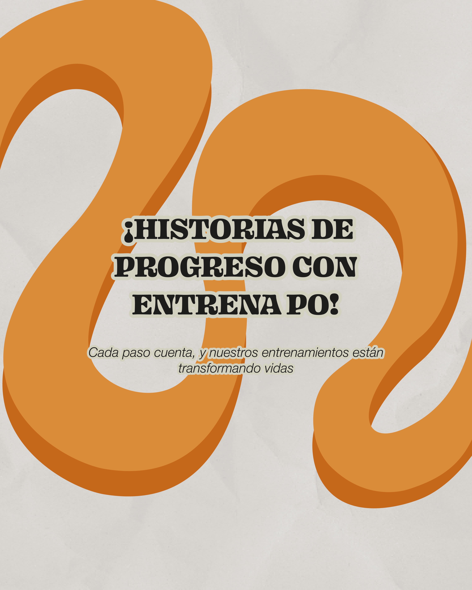
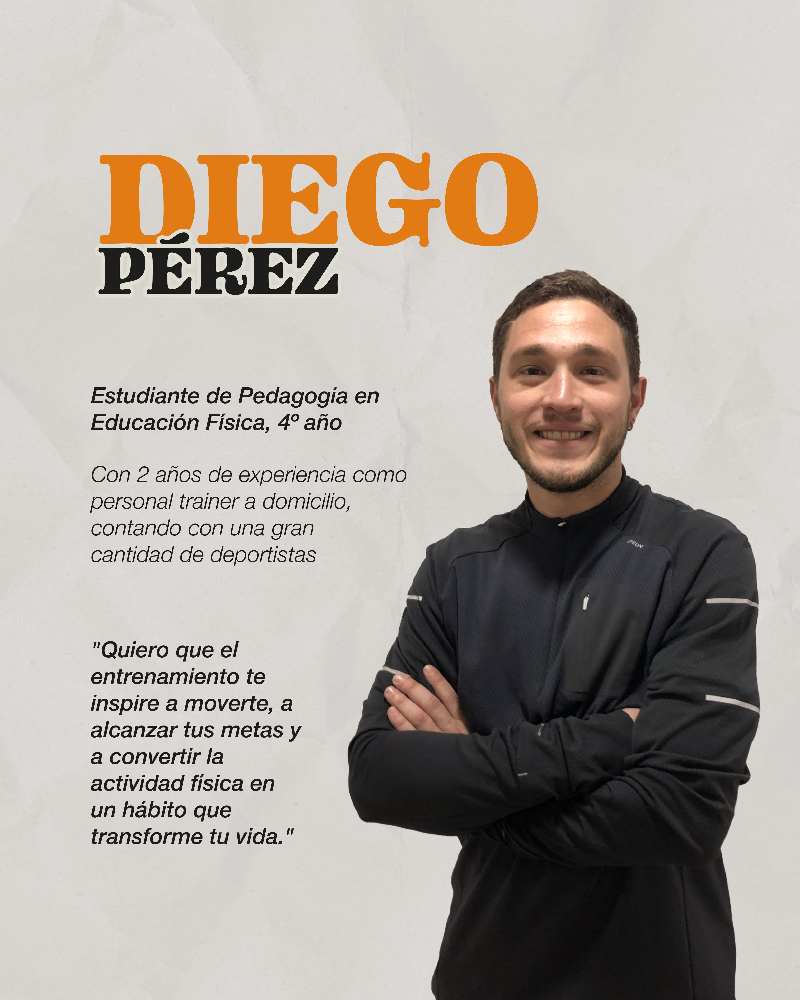

Diseño de identidad y construcción de una presencia digital coherente para un emprendimiento de entrenamiento personalizado en casa, orientado a entregar cercanía, claridad y consistencia en redes sociales

Emprendimiento deportivo
personalizado y en casa
2023–2024
Diseño de identidad,
Manejo de RRSS
Illustrator, Photoshop, Capcut
Entrena Po es un proyecto de entrenamiento personalizado liderado por un amigo cercano, enfocado en acompañar a personas que buscan ejercitarse de manera práctica y accesible desde su hogar.
La marca necesitaba una identidad clara y una línea visual que reflejara dinamismo, motivación y confianza, junto con una estructura comunicacional que ordenara el contenido dentro de Instagram, su principal canal de difusión.
Fui responsable del diseño de la identidad visual, la creación del sistema gráfico, la definición del estilo comunicacional y la gestión del contenido en Instagram. Esto incluyó la creación de plantillas, tipografías aplicadas, paleta cromática, piezas audiovisuales, publicaciones estáticas y organización del feed para asegurar consistencia y claridad.






Desarrollé una identidad visual moderna y enérgica, basada en un sistema modular que permite adaptar distintos tipos de contenido sin perder coherencia. La propuesta incluye un estilo gráfico simple, colores llamativos, tipografías accesibles y una estructura visual que facilita la lectura rápida dentro de redes sociales.
Además, se diseñó una línea editorial enfocada en educación, motivación y ejercicios, lo que permitió mantener una comunicación estable, profesional y cercana con la audiencia.